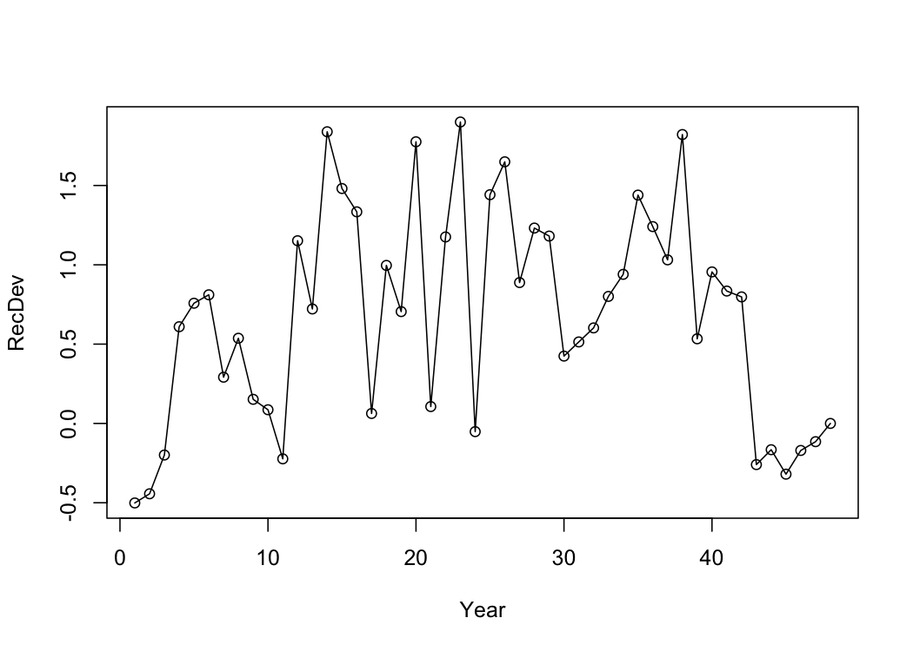
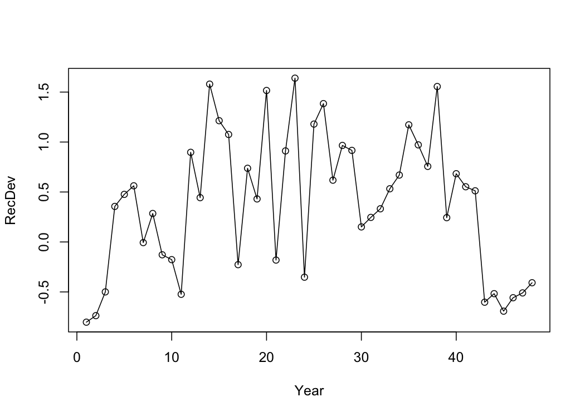
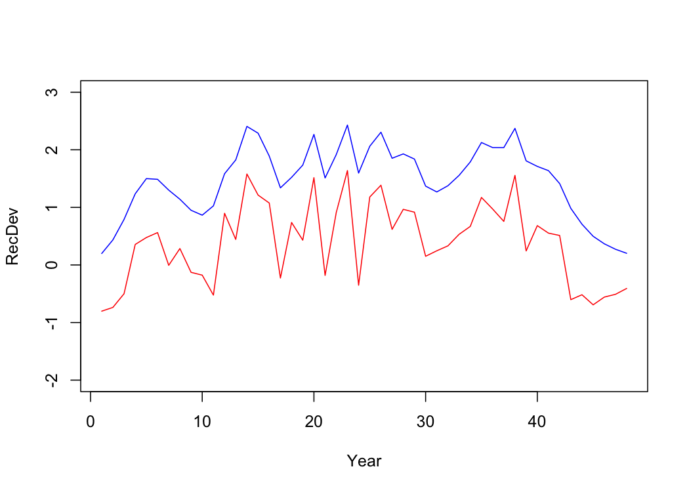
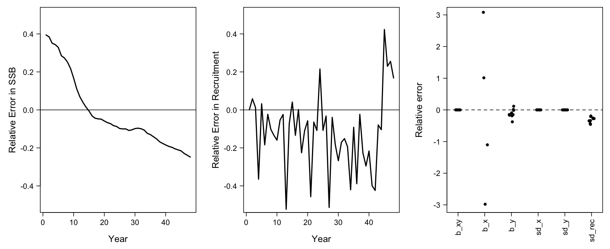
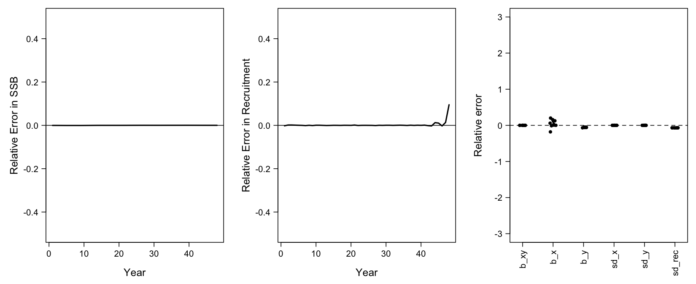
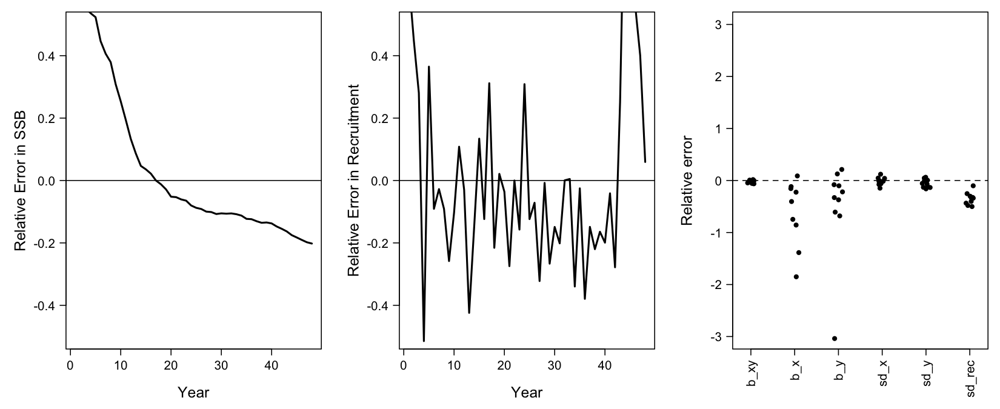
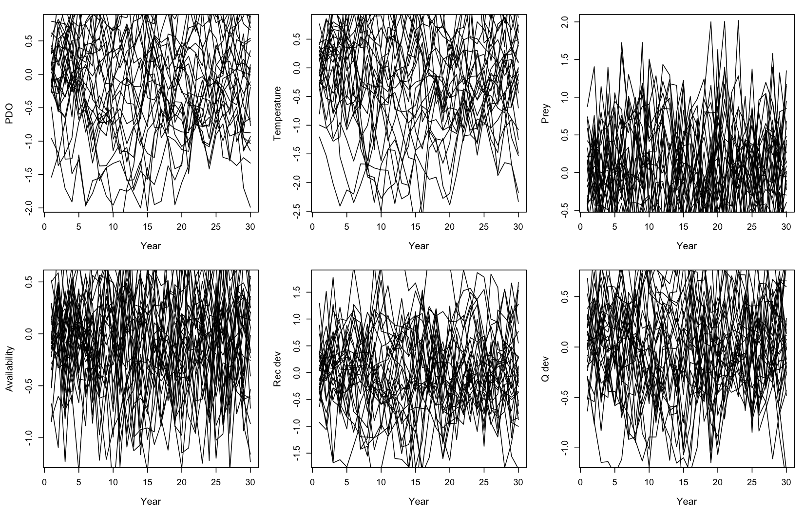
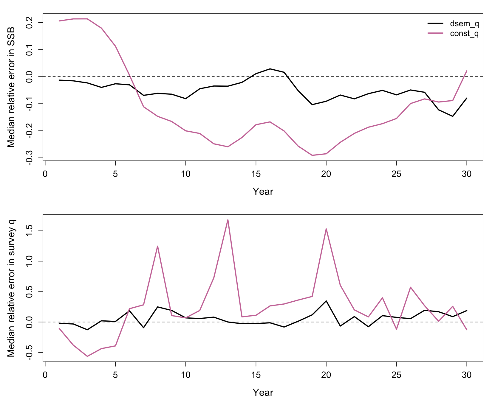
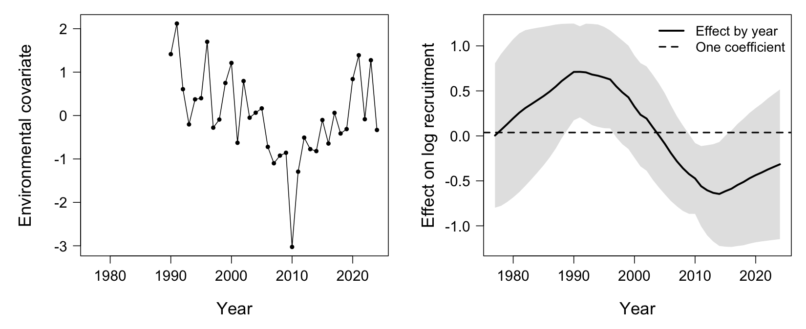
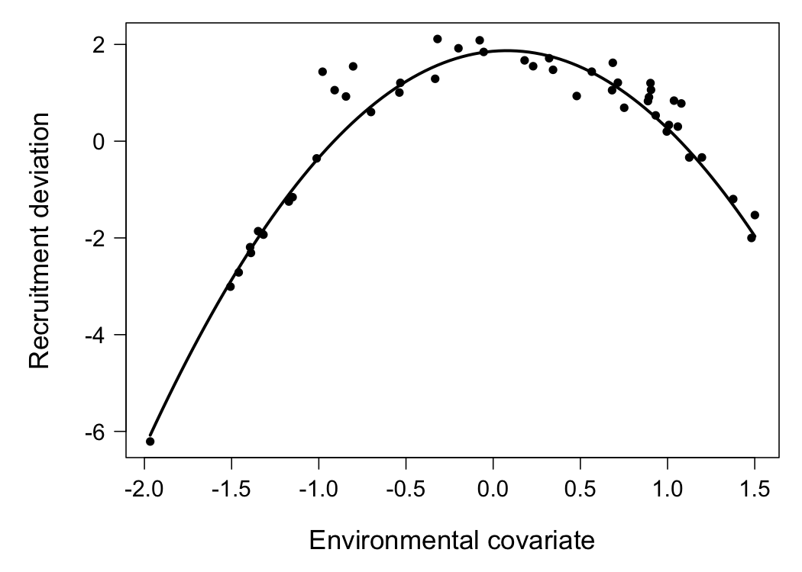

A dynamic structural equation model (dsem) specifies how a set of
time-series affect each other using an arrow lag notation, and computes
a joint density over all time-series. Within the context of a stock
assessment, the time-series we are primarily focused on are deviation
process errors (e.g., recruitment), and how these process errors might
be explained by environmental covariates. In SPoRC, various
population processes can be linked to a dsem model, thereby replacing
the process error penalty a given process originally had (e.g., iid
recruitment deviations) with a dsem density (which can express iid
recruitment deviations and more). In the following, we demonstrate how a
dsem can be specified (Thorson et al. 2024) using SPoRC,
and the various processes to which a dsem can be linked. Specifically,
we first demonstrate the dsem model and the mathematical underpinnings
of it, fit a dsem within the context of a stock assessment model,
conduct a self test and cross test, and illustrate dsem forecasting
capabilities.
What a dsem is
Arrow and Lag notation
In general, a dsem can be specified using arrow and lag notation (and
see Thorson et al. 2024 for further details). Here, we specify one arrow
per line, which follows the nomenclature of
from -> to, lag, name, start. The time-series
from, lag years earlier, affects the
time-series to. The coefficient is the parameter
name, or is fixed at start when the name is
set to NA. This formulation therefore specifies a path
coefficient in a dsem model (i.e., analogous to a regression coefficient
in a linear model). An sd line can then be specified using a
double-headed arrow notation a <-> a, 0, name, start,
while a covariance between two series’ innovations is
a <-> b, 0, name, start. A name used on two arrows is
one shared parameter (i.e., the same name in two lines). An example is
provided below where we specify that an environmental covariate in year
x has an impact on recruitment in year x,
while the environmental covariate itself follows an AR(1) like process
.
Process error for the environmental covariate and recruitment deviations
is then specified as well.
arrows <- c("env -> rec, 0, b_env, 0.5", # this year's covariate affects this year's recruitment
"env -> env, 1, rho, 0.5", # the covariate follows itself from last year
"env <-> env, 0, sd_env, 0.5", # covariate innovation sd
"rec <-> rec, 0, sd_rec, 0.5") # recruitment innovation sd
m <- read_dsem_arrows(arrows, variables = c("env", "rec"))
m$arrows[, c("type", "from", "to", "lag", "name")]
#> type from to lag name
#> 1 path env rec 0 b_env
#> 2 path env env 1 rho
#> 3 sd env env 0 sd_env
#> 4 sd rec rec 0 sd_recread_dsem_arrows is not used directly by the user but
can be a useful way to understand the various processes specified within
the dsem as well as where things fit within matrices used when
specifying a dsem.
Going from arrows to a density function
Building off of this simplified example, we hope to provide intuition
for how a dsem likelihood is computed. In this case, we continue using
the env time-series and rec time-series, while
specifying three years and the four arrows written as above. Here, we
write the values as a matrix / grid, years in the rows and series in the
column, and number the cells series by series:
env rec
year 1 1 4
year 2 2 5
year 3 3 6Note that each cell has an innovation (i.e., the part that the arrows
themselves do not explain). For example, the recruitment innovation in
year 2 is cell 5 minus b_env times cell 2, because
env -> rec, 0:
The covariate innovation in year 2 is cell 2 minus rho
times cell 1, given that env -> env, 1:
Note that year 1 has nothing before it so the covariate innovation is
just cell 1. We can then collect all those subtractions into a matrix
called B with one row per cell: e.g., row 5 has
b_env in column 2, row 2 has rho in column 1.
Then the vector of innovations can be expressed as:
where
- is the grid stacked into one vector of length 6, cell order as above
- is each cell’s mean, a constant per series (zero for a deviation)
- is the 6 by 6 matrix of path coefficients, row holding the coefficients on the cells that point into cell
- is the identity, so has ones on the diagonal and minus each coefficient off it
- is the vector of innovations, one per cell
Written out in full for this 3-year, 2-series example, is (rows are the cell being predicted, columns are the cell doing the predicting):
Rows 2-3 hold env -> env, 1, rho (one step off the
diagonal within the env block), rows 4-6 hold
env -> rec, 0, b_env (the diagonal of the lower-left
block, since the lag is 0), and row 1 is empty because year 1 has no
previous values. Given that, it follows that:
Writing the centered values as , and taking as it is for a deviation series, multiplying through recovers every innovation at once:
Next, the two <-> lines then fill a diagonal
matrix of innovation standard deviations:
The two <-> lines give the variance of each
innovation:
and
,
with all innovations assumed to be independent. From these, we can work
out the variance of the time-series themselves, one cell at a time,
using the same equations as above.
In the case of the covariate, year 1 is only its own innovation, so:
Year 2 is . The two terms are independent, so their variances add:
Lastly, year 3 works the same way:
In words, each year keeps a shrunken copy of last year’s variability and adds a new shock. For , this levels off at (i.e., it is stationary).
For recruitment defined as , the variance can be written as:
Recruitment variability is its own shock plus whatever the covariate passes through . When , this is just every year, which is the usual iid recruitment deviation.
In addition to the variances, the covariances can also be written out as:
Note that recruitment deviations become autocorrelated even though
there is no rec -> rec arrow, because they inherit the
covariate’s autocorrelation through
.
Putting this together in a compact matrix form, this can be expressed
as:
Here, substitutes the equations into each other, as we did by hand above. Each row writes a cell as a sum of the innovations that flow into it:
For example, row 3 says . The innovations themselves are independent, with variance:
Multiplying these out, and writing , , and for the covariate variances derived above, the full variance is:
The structure of the covariance can then be seen as:
- The top-left block is the covariate’s AR(1) variance.
- The off-diagonal blocks are that same block scaled by .
- The bottom-right block is that same block scaled by , plus recruitment’s own on the diagonal.
Every entry of is non-zero, because every cell shares at least one innovation with every other cell (only in one direction for later years).
In practice, the density is evaluated using the precision rather than . Written out, is sparse:
The non-zero entries in
correspond exactly to the arrows. There is one entry for each
env -> env link between adjacent years and one for each
env -> rec link in the same year. A zero means two cells
are independent given all the others (conditional independence, which
induces sparsity). For example,
and
are unrelated once
and
are known.
is built directly from the sparse
without inverting anything, which is why dsem (and RTMB) can evaluate
the density efficiently even when there are many years and series. An
example of this is shown below.
cells <- SPoRC:::get_dsem_cells(m, n_grid_yrs = 3) # internal helpers, so the package prefix
parts <- SPoRC:::get_dsem_matrices(dsem_beta = c(b_env = 0.5, rho = 0.6), ln_dsem_sd = log(c(sd_env = 1, sd_rec = 0.8)),
dsem_model = m, dsem_cells = cells)
as.matrix(parts$IminusB)
#> [,1] [,2] [,3] [,4] [,5] [,6]
#> [1,] 1.0 0.0 0.0 0 0 0
#> [2,] -0.6 1.0 0.0 0 0 0
#> [3,] 0.0 -0.6 1.0 0 0 0
#> [4,] -0.5 0.0 0.0 1 0 0
#> [5,] 0.0 -0.5 0.0 0 1 0
#> [6,] 0.0 0.0 -0.5 0 0 1
parts$sd_cell
#> [1] 1.0 1.0 1.0 0.8 0.8 0.8Conditional and Marginal Variance in dsem
A dsem time-series has two ways to represent spread, and the sd line
(e.g., rec <-> rec, 0, sd_rec, 0.5) can describe
either one:
- Conditional (the default): the sd line is the size of each year’s new shock, . It is “conditional” because it is how much the series would still vary if we already knew last year’s value and any covariates pointing in. It is analogous to the residual sd in a regression. The series itself ends up more variable than this, because the arrows pass variability forward from the past.
- Marginal: the sd line is the size of the series itself, , i.e., how much the series itself varies overall, including what goes in through the arrows. It is analogous to the raw sd of in a regression. The model then works out how big each year’s shock must be to hit that target.
The two are equal only when no arrows point into the series. The
dsem_variance setting in the setup functions (introduced
later) chooses which one the sd line fixes.
Example: an AR(1) series
Let’s use an AR1 series to motivate the difference between conditional and marginal variance, where with sd line . Substituting back, year 3 is a sum of past innovations, with older ones shrunk by :
The two parameterizations fix opposite sides of this equation:
-
"conditional"(the default) sets every year. The series’ spread then grows and settles at (i.e., the stationary variance of ). -
"diagonal"/"marginal"set every year and then solve backwards for the innovation (i.e., figures out what the innovations should be to satisfy the condition).
With and :
| Year | Conditional | Conditional | Marginal | Marginal |
|---|---|---|---|---|
| 1 | 1 | 1.00 | 1 | 1 |
| 2 | 1 | 1.25 | 0.87 | 1 |
| 3 | 1 | 1.31 | 0.87 | 1 |
| 1 | 1.33 | 0.87 | 1 |
In short, under conditional is the size of each year’s new shock. Under marginal, is the size of the swings you actually see in the series.
Note that a random walk () cannot use the marginal form. The past alone already fills the target (), which leaves no room for new noise, so the setup refuses that pairing (i.e., because the random walk series is non-stationary).
Why it matters for recruitment
The choice matters most for recruitment. Take
env -> rec, 0, b_env, so each year’s recruitment
deviation is the covariate’s effect plus a recruitment shock:
The two pieces are independent, so their variances add:
To make this concrete, suppose
,
,
and the sd line is sd_rec
.
The covariate’s contribution is then
,
and the two settings split things differently:
| Covariate part | Shock part, | Total, | Total sd | |
|---|---|---|---|---|
| No covariate () | 0 | 0.36 | 0.36 | 0.60 |
| Conditional | 0.25 | 0.78 | ||
| Marginal | 0.25 | 0.60 |
- Thus, under conditional,
sd_recfixes the shock, so the covariate adds variability on top of it. Recruitment deviations become more variable (sd 0.78) than in a model without the covariate. - By contrast, under marginal,
sd_recfixes the total, so the covariate takes a share of it. Recruitment deviations keep the same spread (sd 0.60) as an iid model, and the covariate explains of it, leaving a smaller shock (sd 0.33).
In other words, marginal keeps sd_rec comparable to a
standard assessment with iid recruitment deviations. Conditional keeps
it comparable to dsem, where sd_rec is the
variability left over after the covariate.
Diagonal versus marginal
In general, "diagonal" and "marginal" both
read the sd line as the spread of the series, i.e.,
.
They differ only in how they handle covariance between series
(a <-> b). Without covariance specified, the two give
identical results.
Consider the recruitment example again where,
,
and add env <-> rec, so the environmental and
recruitment innovations are themselves correlated (correlation
).
The two pieces of
are then no longer independent, and their variances no longer simply
add. Therefore, a cross term appears:
- In this context,
"diagonal"solves for the shock as if the cross term were not there, i.e., . The cross term is then added on top, so the series misses the target. -
"marginal"includes the cross term when solving. Because the unknown shock sd appears in the cross term as well, there is no simple closed form, so the model finds it with a short fixed-point iteration (guess, update, repeat until it converges to some solution).
Using the same numbers as above (, , target ) plus :
| Shock variance | Covariate part | Cross term | Total | |
|---|---|---|---|---|
| Diagonal | 0.25 | 0.46 (misses 0.36) | ||
| Marginal | 0.046 | 0.25 | 0.36 (hits target) |
In practice, use "diagonal" when there are no covariance
lines, since it is simpler and gives the same answer. However, we
recommend specifying "marginal" when there are covariance
lines and you need the series’ spread to equal the sd line exactly.
Series observed with error
In the above, we assumed that the grid holds a series observed without error, and the arrows specify how it may move from year to year. However, this is rarely the case, where there is often observation error. In such a case, this can be specified as:
where
is what you measured in year
and
is whatever density suits the measurement, which is set by the
dsem_family argument (discussed further below). The mean of
is
through a link function, so that
sits on a scale where a normal makes sense: counts take a log and
is the log mean count, while proportions take a logit link instead.
dsem_family |
link | mean of | extra spread |
|---|---|---|---|
fixed |
identity | itself | none, and no observation density |
normal, gaussian
|
identity | estimated sd | |
gaussian_fixed_sd |
identity | one supplied per observation | |
lognormal |
log | median | estimated sd, log scale |
poisson |
log | none, set by the mean | |
bernoulli, binomial
|
logit | none, set by the mean | |
gamma |
log | estimated coefficient of variation | |
tweedie |
log | estimated sd and power |
Because
is an observation of the time-series and not the true time-series
itself,
(the true underlying state that generated the time-series) can be
estimated in every year, whether or not that year has an observation.
Thus,
becomes the random effect for that time-series, and the years you did
not observe are interpolated by the arrow-lag notation specified. In the
case where a year with no observation contributes no
term, the arrows decide what that value should be (i.e., its conditional
mean given the other years). For instance, under an AR1 it comes back as
with standard deviation
,
where
is the innovation sd. Under independent deviations it returns the series
mean at the full
.
Supplying known values is the one case with no observation density at
all, and there the series is the data and nothing is estimated for it
(i.e., dsem_family = fixed).
Recruitment bias correction behavior under dsem
Note that when using a dsem, the behavior of a recruitment bias
correction changes. Firstly, under a dsem, SPoRC enforces
the condition that no recruitment bias ramp can be turned on. Next,
bias_correct_pe is a switch that determines whether a
lognormal bias correction using the marginal variance of the dsem linked
series is applied. Moreover, under a dsem, the variances used for bias
correction are determined by the arrows specified.
Two implications follow for the initial age deviations. Because the
arrows take over the recruitment deviations’ density,
ln_sigmaR is not used by anything, and the initial ages are
instead held at the recruitment series’ marginal variance under the
arrows, taken at the last year the link covers, provided that variance
settles. For a stationary series it stops changing well before the end,
so the choice of year is immaterial. Two kinds of series never settle,
and each falls back a step: a random walk, written as a lagged self path
of one, would otherwise take a value that grows with the length of the
model, so it reads its own <-> sd line instead, which
is what a walk fitted outside a dsem also does; and a series whose sd is
moderated by another has no single sd line to fall back to, so it reads
ln_sigmaR as supplied, which is the one case where that
argument is still live under a dsem. The operating model applies the
same three rules, so a simulation draws the initial deviations at
whatever the estimation model penalizes them at.
Setup_Sim_DSEM writes the same value into the operating
model’s ln_sigmaR, so a simulation draws the initial
deviations at the spread the estimation model penalizes them at. This
only matters where those deviations are penalized at all: under
equil_init_age_strc = "equil" none are estimated, and under
"stoch_all_no_pen" they are estimated without a penalty, so
the marginal variance goes unread in both cases.
That marginal variance is taken conditional on whatever the model
treats as known, which is every year a covariate is observed together
with the years before a linked series begins. A covariate observed in
every year therefore contributes nothing to it, and the marginal
collapses to the innovation standard deviation named on that series’ own
<-> line; only missing years or a latent series widen
it. This is worth keeping in mind when the value that comes back is
smaller than the spread of the simulated series would suggest.
Finally, a series whose variance is itself moderated by another
series has no single variance to correct on, and the initial ages, born
before the grid begins, have no defensible one at all.
SPoRC refuses that combination, so a moderated recruitment
variance requires bias_correct_pe = "none".
Using dsem inside an assessment model
Having described the underpinnings of a dsem model, we next seek to
integrate such a model class within the context of a stock assessment
model. The following example does so using recruitment deviations as the
series we attempt to model using a dsem. We use a contrived example of
the packaged GOA dusky rockfish fit (dusky_rtmb_model) and
demonstrate various ways in which dsem can be used to specify
recruitment deviations, ranging from penalized likelihood with iid
deviations, random effects with iid deviations, and environmental
linkages to recruitment. In the following example, we demonstrate a
penalized likelihood approach, which yields the same model results as
the GOA dusky vignette.
# setup base config
data("dusky_rtmb_model")
base <- list(data = dusky_rtmb_model$data, par = dusky_rtmb_model$parameters, map = dusky_rtmb_model$mapping, verbose = FALSE, store_config = FALSE)
# the penalized fit below reproduces the packaged one, which doesnt do bias correction. the random effect fits take the full lognormal correction, so they read a base that asks for it
re_base <- base
re_base$data$bias_correct_pe <- 1
# setup recruitment for dsem
pen_base <- Setup_Mod_Rec(
input_list = base,
sigmaR_switch = 1,
ln_sigmaR = array(-0.1068576, dim = c(2, base$data$n_pop, base$data$n_regions)),
rec_model = "mean_rec",
init_age_strc = 1,
ln_global_R0 = log(2.7),
t_spawn = base$data$t_spawn,
RecDevs_model = "dsem" # set recdev model as dsem
)
# setup dsem - penalized likelihood w/ sigmaR fixed
pen_recdev <- Setup_Mod_DSEM(
pen_base,
dsem_arrows = "
rec <-> rec, 0, NA, 0.8986536
",
dsem_data = NULL
)
# fit model
pen_recdev_mod <- fit_model(
pen_recdev$data,
pen_recdev$par,
pen_recdev$map,
NULL, silent = TRUE
)
# get sd report
pen_recdev_mod$sd_rep <- sdreport(pen_recdev_mod)
pen_recdev_mod$sd_rep
# check if fit with dsem is the same with previous penalized fit (should be)
pen_recdev_mod$rep$jnLL # dsem
dusky_rtmb_model$rep$jnLL # original
# show plot
plot(pen_recdev_mod$rep$dsem_x_grid, ylab = 'RecDev', xlab = 'Year')
lines(as.vector(dusky_rtmb_model$rep$ln_RecDevs))
Having shown the equivalence above, we next estimate recruitment
deviations as random effects using the dsem interface. Note that using
the dsem interface here to specify iid recruitment is also equivalent to
simply estimating sigmaR and treating recruitment
deviations as random effects (without the dsem interface):
# random effect deviations take the full lognormal correction, so no ramp
dsem_base <- Setup_Mod_Rec(
input_list = re_base,
do_rec_bias_ramp = 0,
sigmaR_switch = 1,
ln_sigmaR = array(-0.1068576, dim = c(2, re_base$data$n_pop, re_base$data$n_regions)),
rec_model = "mean_rec",
init_age_strc = 1,
ln_global_R0 = log(2.7),
t_spawn = re_base$data$t_spawn,
RecDevs_model = "dsem"
)
# setup dsem - iid state space w/ sigmaR estimate
re_dsem_recdev <- Setup_Mod_DSEM(
dsem_base,
dsem_arrows = "
rec <-> rec, 0, sd_rec, 0.8986536
",
dsem_data = NULL
)
# fit model
re_dsem_recdev_mod <- fit_model(
re_dsem_recdev$data,
re_dsem_recdev$par,
re_dsem_recdev$map,
"ln_RecDevs", silent = TRUE
)
# get sd report
re_dsem_recdev_mod$sd_rep <- sdreport(re_dsem_recdev_mod)
re_dsem_recdev_mod$sd_rep
# setup w/o dsem. one sigmaR across the early and late period
nodsem_base <- Setup_Mod_Rec(
input_list = re_base,
do_rec_bias_ramp = 0,
sigmaR_switch = 1,
ln_sigmaR = array(-0.1068576, dim = c(2, re_base$data$n_pop, re_base$data$n_regions)),
rec_model = "mean_rec",
init_age_strc = 1,
ln_global_R0 = log(2.7),
t_spawn = re_base$data$t_spawn,
RecDevs_model = "iid",
sigmaR_spec = "est_shared_all"
)
# fit model w/o dsem
re_nodsem_recdev_mod <- fit_model(
nodsem_base$data,
nodsem_base$par,
nodsem_base$map,
"ln_RecDevs", silent = TRUE
)
# get sd report
re_nodsem_recdev_mod$sd_rep <- sdreport(re_nodsem_recdev_mod)
re_nodsem_recdev_mod$sd_rep
# should give equivalent results
re_dsem_recdev_mod$rep$jnLL
re_nodsem_recdev_mod$rep$jnLL
# show plot
plot(re_dsem_recdev_mod$rep$dsem_x_grid, ylab = 'RecDev', xlab = 'Year')
lines(as.vector(re_nodsem_recdev_mod$rep$ln_RecDevs))
Next, we can specify an AR(1) process on recruitment deviations for Dusky Rockfish. This is done using arrow-lag notation, and is shown in the following:
# random effect deviations take the full lognormal correction, so no ramp
dsem_base <- Setup_Mod_Rec(
input_list = re_base,
do_rec_bias_ramp = 0,
sigmaR_switch = 1,
ln_sigmaR = array(-0.1068576, dim = c(2, re_base$data$n_pop, re_base$data$n_regions)),
rec_model = "mean_rec",
init_age_strc = 1,
ln_global_R0 = log(2.7),
t_spawn = re_base$data$t_spawn,
RecDevs_model = "dsem"
)
# setup dsem - ar1 state space w/ sigmaR estimate
re_ar1_dsem_recdev <- Setup_Mod_DSEM(
dsem_base,
dsem_arrows = "
rec -> rec, 1, ar1_rho, 0.5
rec <-> rec, 0, sd_rec, 0.8986536
",
dsem_data = NULL
)
# fit model
re_ar1_dsem_recdev_mod <- fit_model(
re_ar1_dsem_recdev$data,
re_ar1_dsem_recdev$par,
re_ar1_dsem_recdev$map,
"ln_RecDevs", silent = TRUE
)
# get sd report
re_ar1_dsem_recdev_mod$sd_rep <- sdreport(re_ar1_dsem_recdev_mod)
re_ar1_dsem_recdev_mod$sd_rep
# compare with iid version
plot(re_ar1_dsem_recdev_mod$rep$dsem_x_grid, ylab = 'RecDev', xlab = 'Year', col = 'blue', ylim = c(-2, 3), type = 'l')
lines(re_dsem_recdev_mod$rep$dsem_x_grid, col = 'red')
As shown in the plot above, the AR(1) process is a lot smoother
relative to an iid assumption, as would be expected.
Linking covariates to recruitment
A covariate can appear correlated with recruitment only because it
drives something else that matters. For instance, a large-scale climate
index x might affect local temperature y,
which then affects recruitment. Regressed on its own x
looks to be useful, but once y is in it has nothing left to
add. Defining a dsem writes both paths at once and allows us to better
understand causal drivers, which is the case Champagnat et al. (2026)
make for ecosystem and climate-linked assessments generally:
where
and
are the two covariates in year
,
is the recruitment deviation, each
is the path coefficient named on its arrow, and each
is that series’ innovation. The direct effect of x is
and its indirect effect is
.
Under full mediation
by the way we have defined this model, so the
term drops out and recruitment depends on x only through
y.
We use the packaged dusky recruitment deviations and build two
contrived simulated covariates. y is those deviations plus
noise, so it relates to recruitment directly. x is
y plus noise, so it relates to recruitment only through
y. Both are standardized.
set.seed(777)
rec_dev <- as.vector(dusky_rtmb_model$rep$ln_RecDevs[1,1,])
y <- as.vector(scale(rec_dev + rnorm(length(rec_dev), 0, 0.9)))
x <- as.vector(scale(y + rnorm(length(y), 0, 0.5)))
cov_df <- data.frame(year = base$data$years, x = x, y = y)
# x correlates with recruitment, but adds nothing once y is in the regression
c(cor_xy = cor(x, y),
cor_x_rec = cor(x, rec_dev),
cor_y_rec = cor(y, rec_dev),
partial_x = coef(lm(rec_dev ~ x + y))["x"])x correlates with recruitment at 0.58, which is what
regressing one covariate at a time would pick up, and its coefficient in
a regression holding both is -0.11.
Both fits below reuse dsem_base, the input list from the
comparison above, which already hands the recruitment deviations to the
dsem. Both covariates are standardized so their means are fixed at zero,
and both are observed in every year, so the recruitment deviations are
the only random effects.
fit_dsem_cov <- function(arrows) {
il <- Setup_Mod_DSEM(
dsem_base,
dsem_arrows = arrows,
dsem_data = cov_df,
dsem_mu_spec = c(x = 0, y = 0)
)
mod <- fit_model(il$data, il$par, il$map, "ln_RecDevs", silent = TRUE)
mod$sd_rep <- sdreport(mod)
mod$arrow_names <- c(il$data$dsem_model$beta_names, il$data$dsem_model$ln_sd_names)
mod
}
# x regressed on its own, with the mediator left out of recruitment
x_only <- fit_dsem_cov("
x <-> x, 0, sd_x, 1
x -> y, 0, b_xy, 0.9
y <-> y, 0, sd_y, 0.5
x -> rec, 0, b_x_rec, 0.3
rec <-> rec, 0, sd_rec, 0.8986536
")
# both paths in, so the fit can presuambly identify a direct effect of x if one is there
both <- fit_dsem_cov("
x <-> x, 0, sd_x, 1
x -> y, 0, b_xy, 0.9
y <-> y, 0, sd_y, 0.5
x -> rec, 0, b_x_rec, 0
y -> rec, 0, b_y_rec, 0.3
rec <-> rec, 0, sd_rec, 0.8986536
")
# arrow estimates, named
lapply(list(x_only = x_only, both = both), function(m) {
tab <- summary(m$sd_rep, "fixed")
tab <- tab[rownames(tab) %in% c("dsem_beta", "ln_dsem_sd"), , drop = FALSE]
rownames(tab) <- m$arrow_names
round(tab, 4)
})Regressed on its own, x gets a direct effect of 0.664
with a standard error of 0.158. Put y in beside it and the
same coefficient is -0.030 against a standard error of 0.408, while
y takes 0.718. The path from x to
y comes back at 0.919 in both fits, since it is just the
path for the two covariates alone. Holding both paths in one fit is what
separates those effects, and regressing one covariate at a time cannot,
demonstrating the utility of a dsem approach.
Self-testing
Given the models above, one can use simulation self-testing to
understand whether or not the coefficients obtained were spurious due to
short time-series length, and whether or not results obtained from the
dsem integrated approach are robust. In this case, the
simulation_self_test function conducts a conditional
simulation where the random effects / states are held at the estimated
values and considered the truth, but new observational datasets are
generated and fitted to.
n_cores <- min(10, future::availableCores())
self_test_cond <- simulation_self_test(
both$data,
both$parameters,
both$mapping,
random = 'ln_RecDevs',
rep = both$rep,
sd_rep = both$sd_rep,
n_sims = 10,
newton_loops = 2,
n_cores = n_cores,
what = c("SSB", "Rec", "dsem_x_grid"),
what_par = c("dsem_beta", "ln_dsem_sd"),
do_par = TRUE,
sim_type = 'conditional'
)
par(mfrow = c(1,3), mar = c(5, 5.5, 1, 1), mgp = c(3.2, 0.9, 0),
cex.lab = 1.5, cex.axis = 1.25, las = 1)
plot(apply((self_test_cond$SSB - self_test_cond$truth$SSB) / self_test_cond$truth$SSB, 3, median),
ylim = c(-0.5, 0.5), xlab = 'Year', ylab = 'Relative Error in SSB',
type = 'l', lwd = 2)
abline(h = 0, lty = 1)
plot(apply((self_test_cond$Rec - self_test_cond$truth$Rec) / self_test_cond$truth$Rec, 3, median),
ylim = c(-0.5, 0.5), xlab = 'Year', ylab = 'Relative Error in Recruitment',
type = 'l', lwd = 2)
abline(h = 0, lty = 1)
# dsem stuff
beta_mat <- (self_test_cond$dsem_beta - self_test_cond$truth$dsem_beta) / self_test_cond$truth$dsem_beta
sd_mat <- (exp(self_test_cond$ln_dsem_sd) - exp(self_test_cond$truth$ln_dsem_sd)) / exp(self_test_cond$truth$ln_dsem_sd)
dsem_par_mat <- rbind(beta_mat, sd_mat)
rownames(dsem_par_mat) <- c("b_xy", "b_x", "b_y", "sd_x", "sd_y", "sd_rec")
stripchart(as.data.frame(t(dsem_par_mat)),
vertical = TRUE, method = "jitter", pch = 16, cex = 1.1, xaxt = "n", xlab = "",
ylab = "Relative error", ylim = c(-3, 3))
axis(1, at = 1:nrow(dsem_par_mat), labels = rownames(dsem_par_mat), las = 2)
abline(h = 0, lty = 2)
A conditional simulation keeps the states fixed, so variation across
replicates comes only from observation error. Each coefficient is
therefore tested only at the fitted state. Inspecting the figure above,
we notice that some biases arise. We hypothesize that this is likely due
to imperfect data availiability and quantity, rather than model
misspecification or coding errors (though like an identifiability
issue), and we verify this by setting perfect_data = TRUE.
Setting perfect_data = TRUE shrinks every observation
standard deviation to 0.001 and every input sample size to a million,
while leaving process error alone. With virtually zero observation
error, a correctly specified model returns the operating model to
several decimals. Anything that still fails to come back is a property
of the model or of the simulation rather than sampling noise, and
anything that increases in precision was only ever noise.
self_test_cond_perfect <- simulation_self_test(
both$data,
both$parameters,
both$mapping,
random = 'ln_RecDevs',
rep = both$rep,
sd_rep = both$sd_rep,
n_sims = 10,
newton_loops = 2,
n_cores = n_cores,
what = c("SSB", "Rec", "dsem_x_grid"),
what_par = c("dsem_beta", "ln_dsem_sd"),
do_par = TRUE,
perfect_data = TRUE,
sim_type = 'conditional'
)
par(mfrow = c(1,3), mar = c(5, 5.5, 1, 1), mgp = c(3.2, 0.9, 0),
cex.lab = 1.5, cex.axis = 1.25, las = 1)
plot(apply((self_test_cond_perfect$SSB - self_test_cond_perfect$truth$SSB) / self_test_cond_perfect$truth$SSB, 3, median),
ylim = c(-0.5, 0.5), xlab = 'Year', ylab = 'Relative Error in SSB',
type = 'l', lwd = 2)
abline(h = 0, lty = 1)
plot(apply((self_test_cond_perfect$Rec - self_test_cond_perfect$truth$Rec) / self_test_cond_perfect$truth$Rec, 3, median),
ylim = c(-0.5, 0.5), xlab = 'Year', ylab = 'Relative Error in Recruitment',
type = 'l', lwd = 2)
abline(h = 0, lty = 1)
# dsem stuff
beta_mat <- (self_test_cond_perfect$dsem_beta - self_test_cond_perfect$truth$dsem_beta) / self_test_cond_perfect$truth$dsem_beta
sd_mat <- (exp(self_test_cond_perfect$ln_dsem_sd) - exp(self_test_cond_perfect$truth$ln_dsem_sd)) / exp(self_test_cond_perfect$truth$ln_dsem_sd)
dsem_par_mat <- rbind(beta_mat, sd_mat)
rownames(dsem_par_mat) <- c("b_xy", "b_x", "b_y", "sd_x", "sd_y", "sd_rec")
stripchart(as.data.frame(t(dsem_par_mat)),
vertical = TRUE, method = "jitter", pch = 16, cex = 1.1, xaxt = "n", xlab = "",
ylab = "Relative error", ylim = c(-3, 3))
axis(1, at = 1:nrow(dsem_par_mat), labels = rownames(dsem_par_mat), las = 2)
abline(h = 0, lty = 2)
The standard deviations behave differently from the path coefficients
under this comparison. A path coefficient is identified by the precision
of the data, so it tightens sharply. A standard deviation is identified
by the number of deviations it is estimated from, and perfect data adds
no years to the series, which is why its variability barely moves.
Residual spread on sd_rec is a signal about the length of
the time-series rather than an error in the model and coding. Following
verificaiton of a conditional simulation, we next turn to a joint
simulation approach using the same function
simulation_self_test. However, this approach further
requires a user to provide a joint precision matrix, from which the
function can sample new parameter vectors from.
The conditional and joint self tests address different sources of uncertainty. A conditional simulation treats the fitted parameters as fixed and asks whether the model can recover those effects from data with the same observation error. A joint simulation also allows the parameters to vary according to their estimated uncertainty, asking whether the model can recover effects across the range supported by the fit. Practically, a successful conditional test shows that the model can recover the estimated effects if those effects are correct. A successful joint test provides stronger evidence that the effects can be recovered despite uncertainty in their true values. If the conditional test succeeds but the joint test performs poorly, the estimated effects may be recoverable at their fitted values but are not reliably distinguishable across the range of values supported by the data.
both$sd_rep <- sdreport(both, getJointPrecision = TRUE) # get joint precision matrix
self_test_joint <- simulation_self_test(
both$data,
both$parameters,
both$mapping,
random = 'ln_RecDevs',
obj = both,
rep = both$rep,
sd_rep = both$sd_rep,
n_sims = 10,
newton_loops = 2,
n_cores = n_cores,
what = c("SSB", "Rec", "dsem_x_grid"),
what_par = c("dsem_beta", "ln_dsem_sd"),
do_par = TRUE,
sim_type = 'joint'
)
par(mfrow = c(1,3), mar = c(5, 5.5, 1, 1), mgp = c(3.2, 0.9, 0),
cex.lab = 1.5, cex.axis = 1.25, las = 1)
plot(apply((self_test_joint$SSB - self_test_joint$truth$SSB) / self_test_joint$truth$SSB, 3, median),
ylim = c(-0.5, 0.5), xlab = 'Year', ylab = 'Relative Error in SSB',
type = 'l', lwd = 2)
abline(h = 0, lty = 1)
plot(apply((self_test_joint$Rec - self_test_joint$truth$Rec) / self_test_joint$truth$Rec, 3, median),
ylim = c(-0.5, 0.5), xlab = 'Year', ylab = 'Relative Error in Recruitment',
type = 'l', lwd = 2)
abline(h = 0, lty = 1)
# dsem stuff
beta_mat <- (self_test_joint$dsem_beta - self_test_joint$truth$dsem_beta) / self_test_joint$truth$dsem_beta
sd_mat <- (exp(self_test_joint$ln_dsem_sd) - exp(self_test_joint$truth$ln_dsem_sd)) / exp(self_test_joint$truth$ln_dsem_sd)
dsem_par_mat <- rbind(beta_mat, sd_mat)
rownames(dsem_par_mat) <- c("b_xy", "b_x", "b_y", "sd_x", "sd_y", "sd_rec")
stripchart(as.data.frame(t(dsem_par_mat)),
vertical = TRUE, method = "jitter", pch = 16, cex = 1.1, xaxt = "n", xlab = "",
ylab = "Relative error", ylim = c(-3, 3))
axis(1, at = 1:nrow(dsem_par_mat), labels = rownames(dsem_par_mat), las = 2)
abline(h = 0, lty = 2)
The two direct paths are the informative part of these figures.
b_xy returns tightly, while b_x and
b_y scatter widely in both directions even though the
biomass and recruitment they generate come back almost exactly. That is
the mediation structure present in the dsem model. The covariate reaches
recruitment both directly and through the mediator, and presuambly a
series of this length has difficulty identifying how the total effect
divides between the two paths, only what the total is. Nonetheless,
based on the similarities between the conditional and joint simulation
and recovery of parameters when perfect_data = TRUE, it is
likely that biases from this model are likely attributed to uneven
distribution of data availiability (i.e., fewer data points availiable
early and later on in the time-series) rather than an ill conditioned
model / poorly specified model.
Cross-testing
Beyond setting up a simulation self-test in, users can also set up a
simulation cross-testing using dsem. However, this is a
more involved process and requires users to manually setup their own
simulation. We will draw on previous vignettes and manually setup a dsem
simulation from scratch in the following. Most of these steps follow the
Simulation Testing (Cross and Self Tests) vignette and we do not
elaborate further except for the newwer code snippets introduced in this
vignette. In particular, we now demonstrate a dsem linked process for
catchability in the code below. We first setup code that is generally
familiar to users that understand how to setup a simulation in
SPoRC.
# dimensions
sim_list <- Setup_Sim_Dim(
n_sims = 30, # number of simulations
n_yrs = 30, # number of years
n_regions = 1, # single region
n_ages = 10, # number of ages
n_lens = NULL,# no length structure
n_sexes = 1, # single sex
n_fish_fleets = 1, # one fishery fleet
n_srv_fleets = 1, # one survey fleet
n_pop = 1, # number of pops
# the one switch both sides read: the recruitment and initial age deviations are centered on minus half
# their variance here, and the estimating models below say the same thing
bias_correct_pe = "rec"
)
# Create storage containers
sim_list <- Setup_Sim_Containers(sim_list)
# fishing stuff
sim_list <- Setup_Sim_Fishing(sim_list = sim_list, # update simulate list
# Logistic selectivity
fish_sel_input = replicate(
n = sim_list$n_sims,
array(rep(1 / (1 + exp(-3 * ((1:sim_list$n_ages) - 5))), each = sim_list$n_yrs),
dim = c(sim_list$n_pop, sim_list$n_regions, sim_list$n_yrs, sim_list$n_seas, sim_list$n_ages,
sim_list$n_sexes, sim_list$n_fish_fleets))
),
# thin age data, so the year class strengths are not already pinned by the compositions
ISS_FishAgeComps = array(25, dim = c(sim_list$n_regions, sim_list$n_yrs, sim_list$n_seas,
sim_list$n_sexes, sim_list$n_fish_fleets, sim_list$n_sims))
)
# biologicals
sim_list <- Setup_Sim_Biologicals(
sim_list = sim_list, # simualtion list
natmort_input = replicate(n = sim_list$n_sims, array(0.3, dim = c(sim_list$n_pop, sim_list$n_regions, sim_list$n_yrs,
sim_list$n_ages, sim_list$n_sexes))), # natural mortality
WAA_input = replicate(n = sim_list$n_sims, array(rep(5 / (1 + exp(-3 * ((1:sim_list$n_ages) - 3))), each = sim_list$n_yrs),
dim = c(sim_list$n_pop, sim_list$n_regions, sim_list$n_yrs, sim_list$n_seas, sim_list$n_ages, sim_list$n_sexes))), # weight at age
WAA_fish_input = replicate(n = sim_list$n_sims, array(rep(5 / (1 + exp(-3 * ((1:sim_list$n_ages) - 3))), each = sim_list$n_yrs),
dim = c(sim_list$n_pop, sim_list$n_regions, sim_list$n_yrs, sim_list$n_seas, sim_list$n_ages, sim_list$n_sexes, sim_list$n_fish_fleets))), # fishery weight at age
WAA_srv_input = replicate(n = sim_list$n_sims, array(rep(5 / (1 + exp(-3 * ((1:sim_list$n_ages) - 3))), each = sim_list$n_yrs),
dim = c(sim_list$n_pop, sim_list$n_regions, sim_list$n_yrs, sim_list$n_seas, sim_list$n_ages, sim_list$n_sexes, sim_list$n_srv_fleets))), # survey weight at age
MatAA_input = replicate(n = sim_list$n_sims, array(rep(1 / (1 + exp(-3 * ((1:sim_list$n_ages) - 3))), each = sim_list$n_yrs),
dim = c(sim_list$n_pop, sim_list$n_regions, sim_list$n_yrs, sim_list$n_seas, sim_list$n_ages, sim_list$n_sexes))) # maturity at age
)
# recruitment stuff
sim_list <- Setup_Sim_Rec(
sim_list = sim_list,
R0_input = replicate(n = sim_list$n_sims, expr = array(5, dim = c(sim_list$n_pop, sim_list$n_regions, sim_list$n_yrs))), # R0
ln_sigmaR = array(log(1), dim = c(2, sim_list$n_pop, sim_list$n_regions)),
recruitment_opt = 'mean_rec',
# the population starts in equilibrium, so the initial age deviations are zero rather than drawn at sigmaR
ln_InitDevs_input = array(0, dim = c(sim_list$n_pop, sim_list$n_regions, sim_list$n_ages - 1,
sim_list$n_sexes, sim_list$n_sims))
)
# stuff that is not used
sim_list <- Setup_Sim_Tagging(
sim_list = sim_list, # simulation list
use_conv_fish_tagging = 0
)
# No Movement
sim_list$Movement <- array(1, dim = c(sim_list$n_pop, sim_list$n_regions, sim_list$n_regions, sim_list$n_yrs, sim_list$n_seas, sim_list$n_ages, sim_list$n_sexes, sim_list$n_sims))Next we set up the catchability dsem. The usual survey setup is
unchanged, but a new optional module, Setup_Sim_q_devs,
says where a fleet’s catchability deviations come from;
"dsem" give them to the arrows. The map we simulate under
is a chain rather than a single regression: an AR(1) environment drives
recruitment, and recruitment in turn drives survey catchability. Here,
the survey index then moves for two reasons at once, and an estimation
model that gets the causal map wrong has to put that misspecification
somewhere.
sim_list <- Setup_Sim_Survey(
sim_list = sim_list,
# Logistic selectivity
srv_sel_input = replicate(
n = sim_list$n_sims,
array(rep(1 / (1 + exp(-1 * ((1:sim_list$n_ages) - 3))), each = sim_list$n_yrs),
dim = c(sim_list$n_pop, sim_list$n_regions, sim_list$n_yrs, sim_list$n_seas, sim_list$n_ages,
sim_list$n_sexes, sim_list$n_srv))
),
# a believable survey, so a drift in catchability is worth mistaking for abundance
ObsSrvIdx_SE = array(0.1, dim = c(sim_list$n_regions, sim_list$n_yrs, sim_list$n_seas, sim_list$n_srv_fleets)),
ISS_SrvAgeComps = array(25, dim = c(sim_list$n_regions, sim_list$n_yrs, sim_list$n_seas,
sim_list$n_sexes, sim_list$n_srv_fleets, sim_list$n_sims))
)
# catchability deviations are handed to the arrows instead of a process error of their own
sim_list <- Setup_Sim_q_devs(sim_list, srv_q_model = "dsem")
# a contribed climate linked map - a basin scale index warms the shelf and moves the prey field, those two drive
# recruitment, temperature also shifts where the fish sit, and availability and recruitment drive catchability
arrows <- c("pdo -> pdo, 1, rho_pdo",
"pdo <-> pdo, 0, sd_pdo",
"pdo -> temp, 0, b_pdo_temp",
"temp -> temp, 1, rho_temp",
"temp <-> temp, 0, sd_temp",
"pdo -> prey, 0, b_pdo_prey",
"prey <-> prey, 0, sd_prey",
"temp -> rec, 0, b_temp_rec",
"prey -> rec, 0, b_prey_rec",
"rec <-> rec, 0, sd_rec",
"temp -> cond, 0, b_temp_cond",
"cond <-> cond, 0, sd_cond",
"cond -> srv_q, 0, b_cond_q",
"rec -> srv_q, 0, b_rec_q",
"srv_q <-> srv_q, 0, sd_q")
cov_names <- c("pdo", "temp", "prey", "cond") # the four covariates
env_obs_sd <- 0.2 # each covariate is observed with error
# true values for causual map
om_values <- c(rho_pdo = 0.9, sd_pdo = 0.45, b_pdo_temp = 0.7, rho_temp = 0.4, sd_temp = 0.4,
b_pdo_prey = -0.5, sd_prey = 0.5, b_temp_rec = 0.45, b_prey_rec = 0.35, sd_rec = 0.35,
b_temp_cond = 0.6, sd_cond = 0.4, b_cond_q = 0.5, b_rec_q = 0.3, sd_q = 0.2)
# dsem time-series, on two processes at once
sim_list <- Setup_Sim_DSEM(sim_list,
dsem_arrows = arrows,
dsem_values = om_values,
dsem_processes = c("rec", "srv_q"),
dsem_cov_obs_sd = setNames(rep(env_obs_sd, length(cov_names)), cov_names))
# simulate data
set.seed(123)
sim_obj <- Simulate_Pop_Static(sim_list = sim_list, output_path = NULL) # get simulated datasetsThe dsem drawn grid now has six columns, in the order the arrows
introduce them: the four true covariates, the recruitment deviation and
the catchability deviation. Note also observed covariates, with their
measurement error, are in sim_obj$dsem_cov_obs_sim, and
those are the only versions any estimating model gets to see.
par(mfrow = c(2, 3), mar = c(4.5, 4.5, 1.5, 1), cex.lab = 1.2, cex.axis = 1.1)
panels <- list(c("PDO", "1"), c("Temperature", "2"), c("Prey", "3"), c("Availability", "5"),
c("Rec dev", "4"), c("Q dev", "6"))
for(pan in panels) {
for(i in 1:sim_obj$n_sims) {
y <- sim_obj$dsem_x_sim[, as.integer(pan[2]), i]
if(i == 1) plot(y, type = 'l', xlab = 'Year', ylab = pan[1]) else lines(y)
}
}
In this simualted case, the climate index correlates with the catchability deviation even though no arrow connects the two directly, because recruitment and availability sit between them and mediate the effect. In the map we have constructed, the index reaches catchability along three directed paths, and each contributes the product of the coefficients along it. In a similar vein, the recruitment and availability deviations correlate at around 0.6 with no arrow between them either, though for a different reason: both descend from temperature, rather than one reaching the other. In general, a dsem implies a correlation between any two series joined by a directed path, and between any two that share a mediator / node, so the arrows we write down are not the list of pairs the model treats as related, and a pair we leave unconnected is not strictly independent.
Note also that a dsem can be specified from scratch, as we have done here, for recruitment, the numbers at age and catchability, because the simulation generates those deviation arrays itself and the arrows can therefore name them directly. However, and movement are different, since we supply growth and movement values directly to the simulation rather than having it generate them, so there is no deviation array for the arrows to name. For those two processes we instead draw the dsem series ourselves and apply it to the parameters before they are supplied, which is what we do below using a von Bertalanffy K example, letting a slowly varying environment move the growth rate. Movement therefore follows the same idea: specify the movement parameters, then apply dsem linked deviations to those parameters.
# specify dsem model
arrows <- c("env -> env, 1, rho_env",
"env <-> env, 0, sd_env",
"env -> K, 0, b_env",
"K <-> K, 0, sd_K")
truth <- c(rho_env = 0.7, sd_env = 1, b_env = 0.2, sd_K = 0.05)
# get dsem model
dm <- read_dsem_arrows(arrows, variables = c("env", "K"))
av <- SPoRC:::get_dsem_arrow_values(dsem_beta = unname(truth[dm$beta_names]),
ln_dsem_sd = unname(log(truth[dm$ln_sd_names])),
dsem_model = dm)
# draw desem
set.seed(11)
grid <- SPoRC:::draw_dsem_recursive(dm, as.numeric(av), matrix(0, sim_list$n_yrs, 2), n_sims = sim_list$n_sims)
# input devs into growth pars and derive
y <- 1
sim <- 1
Linf <- 100
K_y <- 0.18 * exp(grid[,2,])
len <- Linf * (1 - exp(-K_y[y,sim] * (1:sim_list$n_ages)))After simulating the operating model (OM), we set up the estimation
model (EM) in SPoRC. In general, EM settings are identical
to the OM, except for fishery selectivity. The function takes a
spec, which says which arrows the EM believes and which
processes it declares; everything else stays the same between fits, so
that the differences we report below come from the arrows alone.
One default worth specifying through the setup:
Setup_Mod_DSEM holds every covariate’s mean at zero, since
dsem_mu_spec defaults to "zero". That is the
convention the operating model draws deviations under, and it keeps the
mean from trading off against the path coefficient when a covariate is
seen in only a few years. It does take the covariate as centered: one in
its own units should be centered first, or given
dsem_mu_spec = "fix", which holds it at its observed mean
instead. A warning names any covariate whose observed mean sits further
from zero than its own spread. By contrast, note that
dsem_mu_spec = "est" estimates the means.
setup_em <- function(sim_obj, sim, spec) {
# Extract simulation data for current year and replicate
sim_data <- simulation_data_to_SPoRC(sim_env = sim_obj, y = sim_obj$n_years, sim = sim)
# Setup model dimensions
input_list <- Setup_Mod_Dim(
years = 1:sim_obj$n_years,
ages = 1:sim_obj$n_ages,
lens = sim_obj$n_lens,
n_regions = sim_obj$n_regions,
n_sexes = sim_obj$n_sexes,
n_fish_fleets = sim_obj$n_fish_fleets,
n_srv_fleets = sim_obj$n_srv_fleets,
n_pop = sim_obj$n_pop,
bias_correct_pe = "rec", # the same switch the operating model was given
verbose = FALSE
)
# Recruitment setup
input_list <- Setup_Mod_Rec(
input_list = input_list,
do_rec_bias_ramp = 0, # not doing bias ramp
sigmaR_switch = 1, # when to switch from early to late sigmaR (switch in first year)
ln_sigmaR = array(log(1), dim = c(2, input_list$data$n_pop, input_list$data$n_regions)), # 2 values for early and late sigma
rec_model = "mean_rec",
sigmaR_spec = if(spec$rec) "fix" else "fix_early_est_late", # a declared recruitment leaves sigmaR unread
init_age_strc = "matrix",
equil_init_age_strc = "stoch_all", # estimating all intial age deviations
ln_global_R0 = log(5),
RecDevs_model = if(spec$rec) "dsem" else "iid" # the arrows own the deviations, or they stay iid
)
# the operating model started in equilibrium, so the initial age deviations are known rather than estimated
input_list$par$ln_InitDevs[] <- 0
input_list$map$ln_InitDevs <- factor(rep(NA, length(input_list$par$ln_InitDevs)))
# Biological setup
input_list <- Setup_Mod_Biologicals(
input_list = input_list,
# Data inputs
WAA = sim_data$WAA,
MatAA = sim_data$MatAA,
WAA_fish = sim_data$WAA_fish,
WAA_srv = sim_data$WAA_srv,
fit_lengths = 0, # not fitting lengths
AgeingError = sim_data$AgeingError,
M_spec = "fix", # fixing natural mortality
Fixed_natmort = array(0.3, dim = c(input_list$data$n_pop, input_list$data$n_regions, length(input_list$data$years), length(input_list$data$ages), input_list$data$n_sexes))
)
# Movement and tagging
input_list <- Setup_Mod_Tagging(input_list = input_list, use_conv_fish_tagging = 0)
input_list <- Setup_Mod_Movement(
input_list = input_list,
use_fixed_movement = 1,
Fixed_Movement = NA,
do_recruits_move = 0
)
# Fishery catch & fishing mortality
input_list <- Setup_Mod_Catch_and_F(
input_list = input_list,
# Data inputs
ObsCatch = sim_data$ObsCatch,
UseCatch = sim_data$UseCatch,
# Model options
Use_F_pen = 1,
sigmaC_spec = "fix",
# Fixing sigma C and F
ln_sigmaC = sim_data$ln_sigmaC,
ln_sigmaF = array(log(1), dim = c(input_list$data$n_regions, input_list$data$n_seas, input_list$data$n_fish_fleets))
)
# Survey selectivity and catchability
input_list <- Setup_Mod_FishIdx_and_Comps(
input_list = input_list,
# Data inputs
ObsFishIdx = sim_data$ObsFishIdx,
ObsFishIdx_SE = sim_data$ObsFishIdx_SE,
UseFishIdx = sim_data$UseFishIdx,
ObsFishAgeComps = sim_data$ObsFishAgeComps,
ObsFishLenComps = sim_data$ObsFishLenComps,
UseFishAgeComps = sim_data$UseFishAgeComps,
UseFishLenComps = sim_data$UseFishLenComps,
ISS_FishAgeComps = sim_data$ISS_FishAgeComps,
ISS_FishLenComps = sim_data$ISS_FishLenComps,
# Model options
fish_idx_type = c("biom"),
FishAgeComps_LikeType = c("Multinomial"),
FishLenComps_LikeType = c("none"),
FishAgeComps_Type = c("agg_Year_1-terminal_Fleet_1"),
FishLenComps_Type = c("none_Year_1-terminal_Fleet_1")
)
# Survey indices and compositions
input_list <- Setup_Mod_SrvIdx_and_Comps(
input_list = input_list,
# Data inputs
ObsSrvIdx = sim_data$ObsSrvIdx,
ObsSrvIdx_SE = sim_data$ObsSrvIdx_SE,
UseSrvIdx = sim_data$UseSrvIdx,
ObsSrvAgeComps = sim_data$ObsSrvAgeComps,
ObsSrvLenComps = sim_data$ObsSrvLenComps,
UseSrvAgeComps = sim_data$UseSrvAgeComps,
UseSrvLenComps = sim_data$UseSrvLenComps,
ISS_SrvAgeComps = sim_data$ISS_SrvAgeComps,
ISS_SrvLenComps = sim_data$ISS_SrvLenComps,
# Model options
srv_idx_type = c("biom"),
SrvAgeComps_LikeType = c("Multinomial"),
SrvLenComps_LikeType = c("none"),
SrvAgeComps_Type = c("agg_Year_1-terminal_Fleet_1"),
SrvLenComps_Type = c("none_Year_1-terminal_Fleet_1")
)
# Fishery selectivity and catchability
input_list <- Setup_Mod_Fishsel_and_Q(
input_list = input_list,
# Model options
fish_sel_model = c("logist2_Fleet_1"), # fishery selex model
fish_fixed_sel_pars_spec = c("est_all"), # whether to estiamte all fixed effects for fishery selectivity
fish_q_spec = "est_all" # estimate fishery q
)
# Survey selectivity and catchability
input_list <- Setup_Mod_Srvsel_and_Q(
input_list = input_list,
# Model options
srv_sel_model = c("logist2_Fleet_1"), # survey selectivity form
srv_fixed_sel_pars_spec = c("est_all"), # whether to estimate all fixed effects for survey selectivity
srv_q_spec = c("est_all"), # whether to estiamte all fixed effects for survey catchability
srv_q_model = spec$q, # "dsem" hands the deviations to the arrows, "none" leaves catchability constant
sigma_srv_q_spec = if(spec$q == "dsem") "fix" else "est_all" # a declared catchability leaves its sigma unread
)
# Setup DSEM model here
if(!is.null(spec$arrows)) {
# the covariate used here, specific to each sim given obs error
cov_df <- data.frame(year = 1:sim_obj$n_years)
for(cov in spec$covs) cov_df[[cov]] <- sim_obj$dsem_cov_obs_sim[, match(cov, cov_names), sim]
# setup dsem
input_list <- Setup_Mod_DSEM(
input_list,
dsem_data = cov_df,
dsem_arrows = spec$arrows,
dsem_processes = c(if(spec$rec) "rec", if(spec$q == "dsem") "srv_q"),
dsem_family = setNames(rep("normal", length(spec$covs)), spec$covs) # estimat obs error too
)
}
# Data weighting
input_list <- Setup_Mod_Weighting(
input_list = input_list,
Wt_Catch = 1,
Wt_FishIdx = 1,
Wt_SrvIdx = 1,
Wt_Rec = 1,
Wt_F = 1,
Wt_Tagging = 0,
Wt_FishAgeComps = array(1, dim = c(input_list$data$n_regions, length(input_list$data$years), input_list$data$n_seas,
input_list$data$n_sexes, input_list$data$n_fish_fleets)),
Wt_FishLenComps = array(1, dim = c(input_list$data$n_regions, length(input_list$data$years), input_list$data$n_seas,
input_list$data$n_sexes, input_list$data$n_fish_fleets)),
Wt_SrvAgeComps = array(1, dim = c(input_list$data$n_regions,length(input_list$data$years), input_list$data$n_seas,
input_list$data$n_sexes, input_list$data$n_srv_fleets)),
Wt_SrvLenComps = array(0, dim = c(input_list$data$n_regions, length(input_list$data$years), input_list$data$n_seas,
input_list$data$n_sexes, input_list$data$n_srv_fleets))
)
return(input_list)
}The same data with two different models, and the only difference
between the two fits is how survey catchability is specified: both use
the same catch, indices and compositions, and both see the same four
observed covariates. In dsem_q, catchability is
additionally given to the arrows, so that its deviations are explained
by availability and by recruitment, whereas in const_q
catchability is constant over time.
# dsem map
shared <- c("pdo -> pdo, 1, rho_pdo",
"pdo <-> pdo, 0, sd_pdo",
"temp -> temp, 1, rho_temp",
"pdo -> temp, 0, b_pdo_temp",
"temp <-> temp, 0, sd_temp",
"pdo -> prey, 0, b_pdo_prey",
"prey <-> prey, 0, sd_prey",
"temp -> rec, 0, b_temp_rec",
"prey -> rec, 0, b_prey_rec",
"rec <-> rec, 0, sd_rec",
"temp -> cond, 0, b_temp_cond",
"cond <-> cond, 0, sd_cond")
# specifications
specs <- list(
# the map the data were drawn under
dsem_q = list(covs = cov_names, rec = TRUE, q = "dsem",
arrows = c(shared,
"cond -> srv_q, 0, b_cond_q",
"rec -> srv_q, 0, b_rec_q",
"srv_q <-> srv_q, 0, sd_q")),
# the same map, with catchability constant
const_q = list(covs = cov_names, rec = TRUE, q = "none", arrows = shared)
)
n_fit <- 1
n_yrs_em <- sim_obj$n_years
# storage stuff
res <- NULL
ssb_ts <- array(NA_real_, dim = c(n_yrs_em, length(specs), n_fit), dimnames = list(NULL, names(specs), NULL))
q_ts <- ssb_ts
for(sim in 1:n_fit) {
for(name in names(specs)) {
# setup EM
spec <- specs[[name]]
input_list <- setup_em(sim_obj, sim, spec)
# figure out what is random
has_q_dev <- !is.null(input_list$map$ln_srv_q_devs) && any(!is.na(input_list$map$ln_srv_q_devs))
rand <- c("ln_RecDevs", if(has_q_dev) "ln_srv_q_devs", "dsem_x")
model <- fit_model(input_list$data, input_list$par, input_list$map, random = rand, newton_loops = 1, silent = TRUE)
# get paraemters and report
par_list <- model$env$parList()
ssb_ts[, name, sim] <- model$rep$SSB[1,1,]
q_ts[, name, sim] <- model$rep$srv_q[1,,1]
# bind stuff together
res <- rbind(res, data.frame(
sim = sim,
spec = name,
max_grad = max(abs(model$gr(model$env$last.par.best[-model$env$random]))),
betas = paste(round(par_list$dsem_beta, 2), collapse = " "),
sd_q = if(spec$q == "dsem") exp(par_list$ln_dsem_sd[match("sd_q", input_list$data$dsem_model$ln_sd_names)]) else NA, # truth 0.2
ssb_mean_abs_err = mean(abs(model$rep$SSB[1,1,] / sim_obj$SSB[1,1,,sim] - 1)),
q_mean_abs_err = mean(abs(model$rep$srv_q[1,,1] / sim_obj$srv_q[1,,1,sim] - 1)),
rec_dev_rmse = sqrt(mean((par_list$ln_RecDevs[1,1,] - sim_obj$ln_RecDevs[1,1,,sim])^2))
))
} # end spec loop
} # end sim loopAs shown below, mis-specifying the catchability process (i.e., constant q) leads to large biases, while correctly specifying the casual map results in negiligible bias across model replicates.
par(mfrow = c(2, 1), mar = c(4.5, 4.8, 1.5, 1), cex.lab = 1.3, cex.axis = 1.2)
cols <- c(dsem_q = "#000000", const_q = "#CC79A7")
yrs <- 1:n_yrs_em
# the error of every replicate comapred acgainst its own operating model values, then the median over them
median_err <- function(ts, truth) {
err <- sweep(ts, c(1, 3), truth, "/") - 1 # [year, spec, replicate]
apply(err, c(1, 2), median, na.rm = TRUE)
}
ssb_err <- median_err(ssb_ts, sim_obj$SSB[1,1,,1:n_fit])
q_err <- median_err(q_ts, sim_obj$srv_q[1,,1,1:n_fit])
plot(range(yrs), range(ssb_err, na.rm = TRUE), type = 'n', xlab = 'Year', ylab = 'Median relative error in SSB')
for(name in names(specs)) lines(yrs, ssb_err[, name], col = cols[name], lwd = 2.5)
abline(h = 0, lty = 2)
legend('topright', names(specs), col = cols, lwd = 2.5, bty = 'n', cex = 1.1)
plot(range(yrs), range(q_err, na.rm = TRUE), type = 'n', xlab = 'Year', ylab = 'Median relative error in survey q')
for(name in names(specs)) lines(yrs, q_err[, name], col = cols[name], lwd = 2.5)
abline(h = 0, lty = 2)
Non-stationary dynamics
Lastly, we demonstrate how to implement non-stationary dynamics using dsem. There are several approaches availiable for doing so, ranging from: 1) the moderated variable approach, in which a path coefficient is able to change over time; 2) the same substitution on an sd specification, so that a process error variance can change from year to year; and 3) derived series, which allow us to express nonlinear function of a series, such as its square, or an interaction between two covariates. These methods were introduced by Thorson and Kristensen (2026) and we expand upon those concepts here. In the following, we first describe what naming an arrow after a series does to the density, and then fit an environmental effect on Dusky Rockfish recruitment that weakens over time, and a dome shaped recruitment response to a covariate.
Naming an arrow after a series
Consider an environmental index that increased recruitment through the 1980s and 1990s but appears to add little thereafter, perhaps because the mechanism it acted through, such as prey availability at first feeding has changed. A single path coefficient estimated over the whole time-series then likely averages the two periods and can report an effect of nearly zero, even though the covariate was informative for the first half of the assessment. As such, we would like the coefficient itself to be a quantity that changes over time.
This can perhaps be written as:
where
is the covariate in year
and
the recruitment deviation in year
;
is the effect of the covariate on recruitment in year
,
which is now a series of its own and therefore a column of the grid;
is the mean of that series, which is the one effect a stationary model
would have estimated;
is its first order autocorrelation, which sets how fast the effect may
move; and
and
are the innovations of the two series, whose standard deviations are
named on their own <-> lines. Note that
is a series like any other, so the same lines that would make a
covariate autoregressive make the effect autoregressive.
mod_arrows <- c("env -> rec, 0, b_env", # the coefficient is the b_env series, year by year
"b_env -> b_env, 1, rho_b", # the effect follows itself from last year (rho has an ar1 series)
"b_env <-> b_env, 0, sd_b", # and moves this far each year
"env <-> env, 0, sd_env",
"rec <-> rec, 0, sd_rec")
mod_m <- read_dsem_arrows(mod_arrows, variables = c("env", "b_env", "rec"))
mod_m$beta_names # note that benv becomes a series instead of a fixed effect parameter
#> [1] "rho_b"To see where the effect lands in the density, we read for a three year grid, with the effect taking the values 0.2, 0.45 and 0.35 in those years.
mod_cells <- SPoRC:::get_dsem_cells(mod_m, n_grid_yrs = 3)
mod_grid <- cbind(env = c(0.27, -0.63, 0.87), b_env = c(0.20, 0.45, 0.35), rec = c(0.02, 0.22, -0.79))
mod_parts <- SPoRC:::get_dsem_matrices(dsem_beta = c(rho_b = 0.8),
ln_dsem_sd = log(c(sd_b = 0.15, sd_env = 1, sd_rec = 0.6)),
dsem_model = mod_m, dsem_cells = mod_cells, x_grid = mod_grid)
as.matrix(mod_parts$IminusB) # cells run year within series: env, then b_env, then rec
#> [,1] [,2] [,3] [,4] [,5] [,6] [,7] [,8] [,9]
#> [1,] 1.0 0.00 0.00 0.0 0.0 0 0 0 0
#> [2,] 0.0 1.00 0.00 0.0 0.0 0 0 0 0
#> [3,] 0.0 0.00 1.00 0.0 0.0 0 0 0 0
#> [4,] 0.0 0.00 0.00 1.0 0.0 0 0 0 0
#> [5,] 0.0 0.00 0.00 -0.8 1.0 0 0 0 0
#> [6,] 0.0 0.00 0.00 0.0 -0.8 1 0 0 0
#> [7,] -0.2 0.00 0.00 0.0 0.0 0 1 0 0
#> [8,] 0.0 -0.45 0.00 0.0 0.0 0 0 1 0
#> [9,] 0.0 0.00 -0.35 0.0 0.0 0 0 0 1Rows 7 to 9 are the recruitment cells, and they hold minus the effect
of that year in columns 1 to 3, which are the covariate’s cells, whereas
the block where those same rows meet columns 4 to 6, the effect’s own
cells, is empty. Note that this is what separates a moderated arrow from
an ordinary path out of b_env: the latter would say that
recruitment is higher in years when the effect is larger, whatever the
covariate did that year, while the former says that recruitment responds
to the covariate and that the strength of the response is
b_env. Rows 4 to 6 are unchanged by the moderation, and
hold the autocorrelation coefficient of the effect on itself.
An effect that weakens over time
In the following, we use a contrived covariate built against the packaged Dusky Rockfish deviations, which tracks recruitment before 2000 and is pure noise thereafter, and which begins in 1990 as a survey based index might.
years <- base$data$years
n_yrs <- length(years)
eps_std <- as.vector(scale(dusky_rtmb_model$rep$ln_RecDevs[1,1,])) # the packaged deviations, standardized
set.seed(17)
env_fade <- 0.7 * eps_std * (years < 2000) + rnorm(n_yrs, 0, 0.7) # before 2000, track rec, after pure noise
env_fade[years < 1990] <- NA # the index begins in 1990, so the earlier years are states
env_fade <- as.vector(scale(env_fade))
fade_df <- data.frame(year = years, env = env_fade)
c(observed_years = sum(!is.na(env_fade)), cor_before_2000 = cor(env_fade[years %in% 1990:1999], eps_std[years %in% 1990:1999]))In the first example, we estimate one coefficient for the whole
series, which is the stationary model, and the second example allows for
a non-stationary effect. In the second, the autocorrelation and the
innovation sd of the effect are kept fixed at 0.9 and 0.15 by writing
NA in the name field and the value in the fourth, for
reasons we return to below (identifiability), and the effect’s mean is
estimated through dsem_mu_spec.
dsem_pars <- function(fit, input_list) {
fixed_names <- names(fit$sd_rep$par.fixed)
est <- fit$sd_rep$par.fixed[fixed_names == "dsem_beta"]
se <- sqrt(diag(fit$sd_rep$cov.fixed))[fixed_names == "dsem_beta"]
names(est) <- names(se) <- input_list$data$dsem_model$beta_names
round(rbind(est = est, se = se), 3)
}
# stationary effect
flat_arrows <- c("env -> env, 1, rho_env",
"env <-> env, 0, sd_env",
"env -> rec, 0, b_env",
"rec <-> rec, 0, sd_rec")
flat_il <- Setup_Mod_DSEM(dsem_base, dsem_arrows = flat_arrows, dsem_data = fade_df)
flat_fit <- fit_model(flat_il$data, flat_il$par, flat_il$map, random = c("ln_RecDevs", "dsem_x"),
newton_loops = 2, silent = TRUE)
flat_fit$sd_rep <- sdreport(flat_fit)
dsem_pars(flat_fit, flat_il)
# non stationary
slope_arrows <- c("env -> env, 1, rho_env",
"env <-> env, 0, sd_env",
"env -> rec, 0, b_env", # the effect of the covariate is the b_env series
"b_env -> b_env, 1, NA, 0.9", # how fast it may move, kept fixed
"b_env <-> b_env, 0, NA, 0.15", # how far it may move each year, kept fixed
"rec <-> rec, 0, sd_rec")
slope_il <- Setup_Mod_DSEM(dsem_base,
dsem_arrows = slope_arrows,
dsem_data = cbind(fade_df, b_env = NA_real_), # unmeasured, so every year is a state
dsem_mu_spec = "b_env")
# start the effect flat at the single coefficient, as any state space fit is started
b_flat <- flat_fit$env$parList()$dsem_beta[match("b_env", flat_il$data$dsem_model$beta_names)]
slope_il$par$dsem_x[, match("b_env", slope_il$data$dsem_model$variables)] <- b_flat
slope_il$par$dsem_mu[match("b_env", slope_il$data$dsem_model$variables)] <- b_flat
slope_fit <- fit_model(slope_il$data, slope_il$par, slope_il$map, random = c("ln_RecDevs", "dsem_x"),
newton_loops = 2, silent = TRUE)
slope_fit$sd_rep <- sdreport(slope_fit)
dsem_pars(slope_fit, slope_il)
# grab effect
b_yr <- slope_fit$rep$dsem_x_grid[, match("b_env", slope_il$data$dsem_model$variables)]
in_b_col <- rep(slope_il$data$dsem_model$variables == "b_env", each = n_yrs) # the grid runs year within series
estimated <- !is.na(as.integer(slope_il$map$dsem_x))
is_x <- names(slope_fit$sd_rep$par.random) == "dsem_x"
b_se <- sqrt(slope_fit$sd_rep$diag.cov.random[is_x])[in_b_col[estimated]]
c(one_coefficient = flat_fit$optim$objective, effect_by_year = slope_fit$optim$objective)
c(mean_before_2000 = mean(b_yr[years < 2000]), mean_after_2000 = mean(b_yr[years >= 2000]))When estimated as a stationary series, the effect is 0.037 with a standard error of 0.154, which is to say that the covariate does nothing. By contrast, when the effect is estiamted as a non-stationary series, it averages 0.464 before 2000 and -0.320 after it, and the marginal likelihood improves by 7.3 units on the same number of fixed parameters, since the single coefficient has been replaced by the mean of the series. The moderated parameterization therefore recovers some of the structure the covariate was built with, while the stationary form reports the average of a positive effect and no effect and finds nothing.
par(mfrow = c(1, 2), mar = c(5, 5.5, 1, 1), mgp = c(3.2, 0.9, 0), cex.lab = 1.4, cex.axis = 1.2, las = 1)
plot(years, env_fade, type = 'l', xlab = 'Year', ylab = 'Environmental covariate')
points(years, env_fade, pch = 16, cex = 0.8)
plot(years, b_yr, type = 'n', ylim = range(c(b_yr - 1.96 * b_se, b_yr + 1.96 * b_se)),
xlab = 'Year', ylab = 'Effect on log recruitment')
polygon(c(years, rev(years)), c(b_yr - 1.96 * b_se, rev(b_yr + 1.96 * b_se)),
col = '#00000022', border = NA)
lines(years, b_yr, lwd = 2.5)
abline(h = b_flat, lty = 2, lwd = 2)
legend('topright', c('Effect by year', 'One coefficient'), lwd = c(2.5, 2), lty = c(1, 2), bty = 'n', cex = 1.1)
Despite the benefits of a non-stationary dsem, there are two points are worth mentioning about this fit. Firstly, the effect’s autocorrelation and innovation sd are kept fixed rather than estimated. The innovation sd says how far the effect may move each year and can be hard to identify. Fixing it is therefore a choice about how much movement we are prepared to entertain, and a sensitivity analysis over that value is more informative than an estimate of it. Secondly, Thorson and Kristensen (2026) show by simulation that a moderated coefficient is shrunk toward a constant as the data become less informative, so a time-series that comes back nearly flat is evidence about the data as much as about the process.
A dome shaped recruitment response
Recruitment is frequently thought to respond to temperature in a dome shaped way, rising to some optimum and falling away on either side, which can be expressed as a quadratic effect of the covariate rather than a changing one. Moderating an arrow by the same series it comes from writes the squared value: the coefficient on the arrow out of the covariate is the covariate, so the series it points into is the covariate times itself. Giving that series an sd of zero makes it derived, so the square is exactly the square even in years where the covariate was not measured and the model is estimating it.
One further step is needed before the square is useful in an assessment. The square of a standardized covariate has a mean of about one, so it acts partly as a level on the recruitment deviations, and since the deviations have no intercept of their own, that level is estimated against mean recruitment instead. In our fits the uncentered form returned a quadratic coefficient of 0.45, the wrong sign for the dome the covariate was built with, with mean recruitment moving to absorb the level. We therefore subtract the mean of the square, which takes a series that is one in every year, from which a fixed arrow of minus that mean is an intercept.
The map below is built in five pieces, numbered in the code: a series
one that is 1 in every year, the covariate, the square of
the covariate, the square minus its mean, and the recruitment equation.
To see how the pieces chain, take two years with covariate values
and
,
so the mean of the square is
,
and path coefficients
,
and
.
Every series has one equation per year, and each equation has the shape
used in the first section: the cell, minus each arrow pointing into it
times the cell it comes from, equals that year’s innovation. Reading the
five pieces in the order written:
The first line is data, since one is supplied in every
year. The third line is the moderated arrow: the coefficient from
env to env_sq is not a parameter but the value
of env in that same year, so the product is the square. The
right hand side of the third and fourth lines is zero rather than an
innovation because those two series were given an sd of zero, which is
what makes them derived, each being exactly what its arrows say and
nothing more. Rearranging the third line gives
,
substituting that into the fourth gives
,
and substituting that into the fifth gives
which is the centered quadratic. With the numbers above, year 1 has , and, with a zero innovation, ; year 2 has , and .
These five equations are the rows of
.
With two years the grid has ten cells, numbered series by series in the
order the arrows introduce them (one, env,
env_sq, env_ctr, rec), and the
matrix is
Rows 5 and 6 are where the moderation shows: the entry under is itself, read off the grid, so now depends on the values of the series and not only on the parameters. Rows 7 and 8 hold the two fixed arrows into the centered square, under and under , which is minus the coefficient of . Rows 9 and 10 are the recruitment equation. The four derived cells have no innovation, so they get no row in the precision; their rows of read zero and are solved for those cells from the rest. The code below builds the same matrix from the arrows and solves those cells, and returns the square and the centered square worked out above.
env_two <- c(0.5, -1.5)
m_two <- mean(env_two^2) # 1.25
two_arrows <- c("one <-> one, 0, NA, 1",
"env -> env, 1, rho_env",
"env <-> env, 0, sd_env",
"env -> env_sq, 0, env",
"env_sq <-> env_sq, 0, NA, 0",
"env_sq -> env_ctr, 0, NA, 1",
paste0("one -> env_ctr, 0, NA, ", -m_two),
"env_ctr <-> env_ctr, 0, NA, 0",
"env -> rec, 0, b_lin",
"env_ctr -> rec, 0, b_quad",
"rec <-> rec, 0, sd_rec")
two_m <- read_dsem_arrows(two_arrows, variables = c("one", "env", "env_sq", "env_ctr", "rec"))
two_cells <- SPoRC:::get_dsem_cells(two_m, n_grid_yrs = 2)
# the grid the matrices are read off: the derived series are NA, since the arrows set them, and
# the recruitment deviations are the two worked out above
two_grid <- cbind(one = c(1, 1), env = env_two, env_sq = NA, env_ctr = NA, rec = c(2.05, -2.35))
two_parts <- SPoRC:::get_dsem_matrices(
dsem_beta = c(rho_env = 0.6, b_lin = 0.3, b_quad = -1.9)[two_m$beta_names],
ln_dsem_sd = log(c(sd_env = 1, sd_rec = 0.6)[two_m$ln_sd_names]),
dsem_model = two_m,
dsem_cells = two_cells,
x_grid = two_grid
)
two_IminusB <- as.matrix(two_parts$IminusB)
two_names <- paste0(rep(two_m$variables, each = 2), "_", 1:2) # cells run year within series
dimnames(two_IminusB) <- list(two_names, two_names)
two_IminusB
#> one_1 one_2 env_1 env_2 env_sq_1 env_sq_2 env_ctr_1 env_ctr_2 rec_1
#> one_1 1.00 0.00 0.0 0.0 0 0 0.0 0.0 0
#> one_2 0.00 1.00 0.0 0.0 0 0 0.0 0.0 0
#> env_1 0.00 0.00 1.0 0.0 0 0 0.0 0.0 0
#> env_2 0.00 0.00 -0.6 1.0 0 0 0.0 0.0 0
#> env_sq_1 0.00 0.00 -0.5 0.0 1 0 0.0 0.0 0
#> env_sq_2 0.00 0.00 0.0 1.5 0 1 0.0 0.0 0
#> env_ctr_1 1.25 0.00 0.0 0.0 -1 0 1.0 0.0 0
#> env_ctr_2 0.00 1.25 0.0 0.0 0 -1 0.0 1.0 0
#> rec_1 0.00 0.00 -0.3 0.0 0 0 1.9 0.0 1
#> rec_2 0.00 0.00 0.0 -0.3 0 0 0.0 1.9 0
#> rec_2
#> one_1 0
#> one_2 0
#> env_1 0
#> env_2 0
#> env_sq_1 0
#> env_sq_2 0
#> env_ctr_1 0
#> env_ctr_2 0
#> rec_1 0
#> rec_2 1
# the innovation sd of every cell, zero for the four derived ones
two_parts$sd_cell
#> [1] 1.0 1.0 1.0 1.0 0.0 0.0 0.0 0.0 0.6 0.6
# the derived cells solved from the rest, which returns the square and the centered square
two_solve <- SPoRC:::get_dsem_solve_mat(two_parts$IminusB, two_cells)
SPoRC:::set_dsem_solved_cells(two_grid, mu_grid = matrix(0, 2, 5), solve_mat = two_solve, dsem_cells = two_cells)
#> one env env_sq env_ctr rec
#> [1,] 1 0.5 0.25 -1 2.05
#> [2,] 1 -1.5 2.25 1 -2.35The dusky fit below writes the same map over every year of the model.
The two derived series are NA in every year of
dsem_data, since the arrows set them rather than any
observation.
set.seed(31)
dome_raw <- sqrt(pmax(0, (stats::quantile(eps_std, 0.95) - eps_std) / 2)) * sample(c(-1, 1), n_yrs, TRUE)
env_dome <- as.vector(scale(dome_raw + rnorm(n_yrs, 0, 0.25))) # recruitment is highest at intermediate values
sq_mean <- mean(env_dome^2)
dome_df <- data.frame(year = years,
one = 1, # a constant series, so an arrow out of it is an intercept
env = env_dome,
env_sq = NA, # the square, which the arrows work out
env_ctr = NA) # and the square minus its mean
dome_arrows <- c(
# 1. a series that is 1 in every year. every series needs an sd line, and since this one is
# data in every year the line only adds a constant, so it is kept fixed rather than estimated
"one <-> one, 0, NA, 1",
# 2. the covariate itself, an ar1 with its own innovation sd, both estimated
"env -> env, 1, rho_env",
"env <-> env, 0, sd_env",
# 3. env_sq = env * env. the coefficient field names env, so in year t the coefficient is env_t
# and env_sq_t = env_t * env_t. an sd of 0 says env_sq has no innovation, so it is only the square
"env -> env_sq, 0, env",
"env_sq <-> env_sq, 0, NA, 0",
# 4. env_ctr = env_sq - mean(env_sq). two fixed arrows into env_ctr: the square with a coefficient
# of 1, and the constant series with a coefficient of minus the mean. an sd of 0 again, so it is only that sum
"env_sq -> env_ctr, 0, NA, 1",
paste0("one -> env_ctr, 0, NA, ", -round(sq_mean, 4)),
"env_ctr <-> env_ctr, 0, NA, 0",
# 5. rec = b_lin * env + b_quad * env_ctr + innovation. the two coefficients and the sd are estimated
"env -> rec, 0, b_lin",
"env_ctr -> rec, 0, b_quad",
"rec <-> rec, 0, sd_rec"
)
cat(dome_arrows, sep = "\n") # the lines the setup reads
dome_il <- Setup_Mod_DSEM(dsem_base, dsem_arrows = dome_arrows, dsem_data = dome_df)
dome_fit <- fit_model(dome_il$data, dome_il$par, dome_il$map, random = c("ln_RecDevs", "dsem_x"),
newton_loops = 2, silent = TRUE)
dome_fit$sd_rep <- sdreport(dome_fit)
dsem_pars(dome_fit, dome_il)
# the derived series are the square and the centered square, which we read back off the grid
dome_grid <- dome_fit$rep$dsem_x_grid
colnames(dome_grid) <- dome_il$data$dsem_model$variables
max(abs(dome_grid[,'env_ctr'] - (dome_grid[,'env']^2 - sq_mean)))
# the covariate value at which recruitment is highest
dome_beta <- dsem_pars(dome_fit, dome_il)["est",]
-dome_beta[["b_lin"]] / (2 * dome_beta[["b_quad"]])The linear coefficient is 0.301 with a standard error of 0.188 and the quadratic coefficient is -1.899 with a standard error of 0.302, so the response is dome shaped, with the highest recruitment at a covariate value of 0.08, near the middle of the covariate’s range.
par(mar = c(5, 5.5, 1, 1), mgp = c(3.2, 0.9, 0), cex.lab = 1.4, cex.axis = 1.2, las = 1)
env_seq <- seq(min(env_dome), max(env_dome), length.out = 100)
plot(env_dome, dome_grid[,'rec'], pch = 16, xlab = 'Environmental covariate', ylab = 'Recruitment deviation')
lines(env_seq, dome_beta[["b_lin"]] * env_seq + dome_beta[["b_quad"]] * (env_seq^2 - sq_mean), lwd = 2.5)
Note that the fitted deviation in the year with the most extreme covariate value, 2000, is -6.2 against -0.05 in the packaged fit, and that the deviations as a whole now run from -6.2 to 2.1 against -0.5 to 1.9. A quadratic is unbounded, so a covariate value out in the tail implies a recruitment far outside anything the assessment has seen, and a year class that the data inform weakly will follow that implication rather than resist it. As such, we recommend reading a dome shaped response only over the range in which the covariate is dense, and comparing the fitted deviations against those of a model without the covariate before believing an extreme year.
Chaining further derived series raises further powers, and a third order series in the log of a variable is the Taylor approximation to the exponential that Thorson and Kristensen (2026) use to write Lotka-Volterra predator prey dynamics as arrows, which suggests that mechanistic relationships of this kind could be written against assessment process errors in the same way. However, cautions apply from our own attempts. Firstly, a product of a series with itself makes the joint density non-quadratic in the states, so the inner problem behind the Laplace approximation is no longer a simple least squares one, and with the covariate partly unmeasured we found these fits unstable: some converged and others stalled with a large final gradient or returned a non finite likelihood, depending on which years were missing.
References
Champagnat, J., Monnahan, C. C., Sullivan, J. Y., Thorson, J. T., Shotwell, S. K., Rogers, L., and Punt, A. E. 2026. Causal models as a scientific framework for next-generation ecosystem and climate-linked stock assessments. Fish and Fisheries, 27: 942–959.
Thorson, J. T., Andrews, A. G., Essington, T. E., and Large, S. I. 2024. Dynamic structural equation models synthesize ecosystem dynamics constrained by ecological mechanisms. Methods in Ecology and Evolution, 15: 744–755.
Thorson, J.T., Kristensen, K., 2026. Ecological examples of nonstationarity, nonlinearity and statistical interactions in dynamic structural equation models. Methods in Ecology and Evolution 17, 2510–2523. https://doi.org/10.1111/2041-210x.70334